Install Internet Information Services 7.0 and WordPress 3.0.3 by Using the Microsoft Web Platform Installer 3.0
Contents
- 1 Install Internet Information Services 7.0 and WordPress 3.0.3 by Using the Microsoft Web Platform Installer 3.0
- 1.1 Prerequisites
- 1.2 Step 1. Install the Web Platform Installer 3.0
- 1.3 Step 2. Select the products and applications to install
- 1.4 Step 3. Review and configure the selected products and applications
- 1.5 Step 4. Complete the installation and configuration
- 1.6 Step 5. Enable clean URLs (Pretty Permalinks)
- 1.7 Additional Information
Install Internet Information Services 7.0 and WordPress 3.0.3 by Using the Microsoft Web Platform Installer 3.0
This article describes how to install and configure WordPress 3.0.3 on Windows Server 2008 R2 by using the Microsoft Web Platform Installer (Web PI) version 3.0.
The Web PI is a free tool that makes getting the latest components of the Microsoft Web Platform—including Internet Information Services (IIS), MySQL, the Microsoft .NET Framework, and Visual Web Developer—quick and easy. The Web PI also lets you install web applications such as WordPress with the built-in Windows Web App Gallery.
To install WordPress on IIS 7.0 by using the Web PI 3.0, follow these steps:
Step 1. Install the Web Platform Installer 3.0
Step 2. Select the products and applications to install
Step 3. Review and configure the selected products and applications
Step 4. Complete the installation and configuration
Step 5. Enable clean URLs (Pretty Permalinks)
Prerequisites
The supported operating systems for the Web PI 3.0 are Windows 7, Windows Vista Service Pack 1 (SP1), Windows Vista, Windows XP Service Pack 2 (SP2) and later versions, Windows Server 2008 R2, Windows Server 2008, and Windows Server 2003 Service Pack 1 (SP1) and later versions.
For this guide, it is assumed that you have Windows Server 2008 R2 installed on your computer. You will also need an Internet connection and administrator privileges for your computer.
It is a good idea to confirm that your system meets the hardware requirements for IIS 7.0. See http://technet.microsoft.com/en-us/library/cc268240.aspx for more information.
Step 1. Install the Web Platform Installer 3.0
In this step, you begin to install the Web PI 3.0, which is a 1.3 MB download.
- Log on to Windows Server 2008 R2 as a user who has administrative privileges.
- Start Windows Internet Explorer.
- Go to http://www.microsoft.com/web/downloads/platform.aspx, and then click Download It Now.
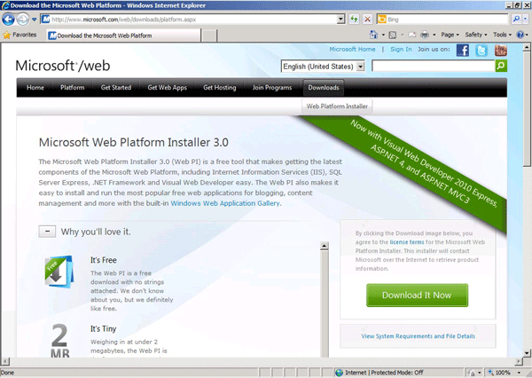 - Click Run.

- Click Run again.

- Wait a few seconds for the Web PI 3.0 to start.


Step 2. Select the products and applications to install
In this step, you select the version of WordPress that you want to install. WordPress 3.0.3 is used in this guide.
- Next to WordPress, click Add.
Note: If WordPress is not in the items list, click Applications in the left navigation pane.
- Click Install.
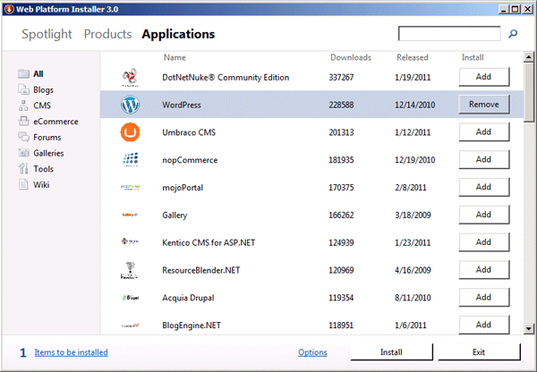

Step 3. Review and configure the selected products and applications
In this step, you review and configure what you have added. Additionally, you add the database, name the MySQL database, and name the WordPress 3.0.3 site.
- When you are asked which type of database you want to use, leave MySQL selected.
Note: This will install MySQL 5.1 for Windows to handle all the database transactions that are required by WordPress. - In the list, select Install it on my machine, and then click Continue.
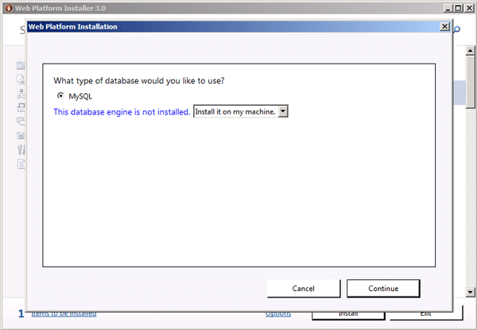 - Scroll down to confirm that all the following items have been automatically included as dependencies:
- IIS 7.0
- PHP 5.3.5
- IIS URL Rewrite 2.0
- Windows Cache Extension 1.1 for PHP 5.3
- MySQL 5.1 for Windows
Note: Windows Cache Extension is used to increase the speed of PHP applications that are running on your web host. IIS URL Rewrite allows “Pretty Permalinks” to be enabled for WordPress.
- Review the files to be downloaded and installed, as well as the license agreements, and then click I Accept.
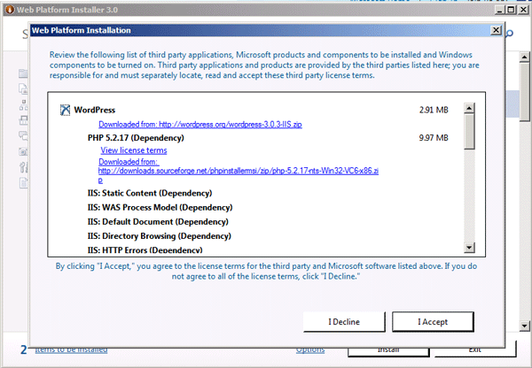 - Specify a password for the MySQL administrator user name (root), and then click Continue.
Note: It is important to remember this password because you will be asked for this password in the steps that follow.
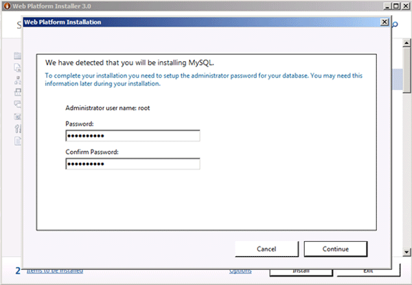 - Allow the Web PI installation to complete.
- In the Web Site box, leave Default Web Site selected.
- In the 'WordPress' application name box, type a name for the WordPress 3.0.3 site, and then click Continue. For example, type myWordPress.
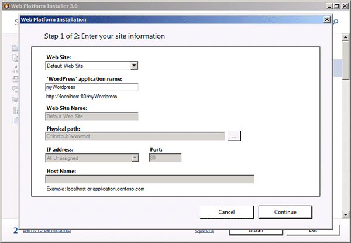 - Leave Create new database selected.
- Type the database administrator user name (root) and password.
Note: This account is used to create and manage the database that is needed for WordPress.
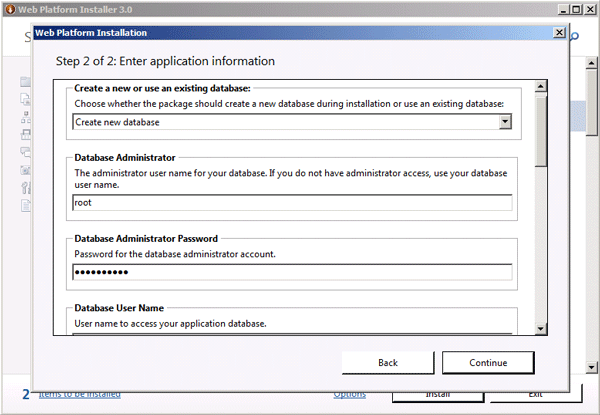 - Type the database user name.
Note WordPress will use this account to access and write to the database as needed. - Type the password for the database user name.
- Leave the default database server name, localhost.
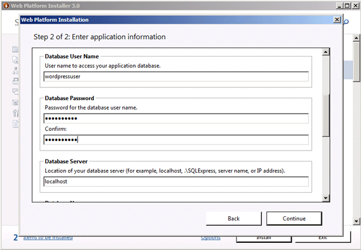 - You may customize the name of the WordPress database as desired.
- Use the WordPress key generator at http://api.wordpress.org/secret-key/1.1/ to generate four unique keys, and then copy the keys into the following fields:
- Unique Key for Passwords
- Unique Key for Secure Passwords
- Unique Key for Authentication
- Second Unique Key for Authentication
Note: You will not be required to recall these keys later.
- Click Continue.
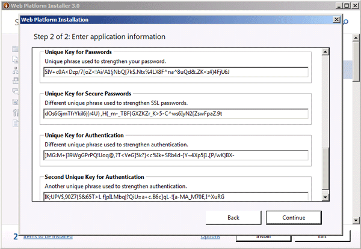 - Click Finish.
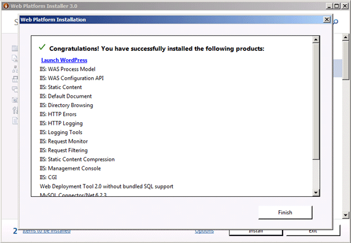 - Click Exit to close the Web PI 3.0.
Step 4. Complete the installation and configuration
In this step, you complete the installation.
- Switch to Internet Explorer.
- Go to your WordPress website. For example, go to http://localhost/myWordPress.
- In the Site Title box, type the name of your site.
- In the Password, twice boxes, type a password for the admin account.

- In the Your E-mail box, type the email address for the admin account.
- Click Install WordPress.

- Click Log In.

- Type admin, type the password, and then click Log In.


Step 5. Enable clean URLs (Pretty Permalinks)
In this step, you enable Pretty Permalinks now that WordPress has been installed.
- In the Dashboard menu, click Settings.

- Scroll down, and then click Permalinks.

- Under Common settings, select a common Permalink setting or select Custom Structure to create your own Permalink, and then click Save Changes.

- Click in the gray text field, press CTRL + A, and then press CTRL + C.
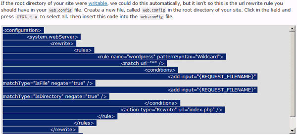 - Start Notepad as an administrator. To do this, click Start, type notepad in the search box, right-click Notepad in the list of results, and then click Run as administrator.
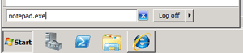
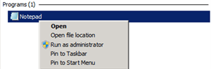 - If you are prompted by User Account Control, click Yes.
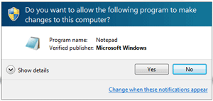 - In Notepad, press CTRL + V to paste the code that you copied from the WordPress configuration page.
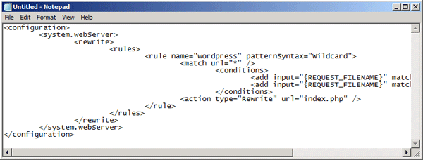 - Click File, and then click Save As.
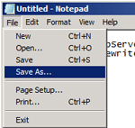 - In the Save As dialog box, browse to C:\intepub\wwwroot\myWordPress.
Note: This step assumes that you named the WordPress site myWordPress during installation. If you used a different name, use that name instead of myWordPress. - In the File name box, type web.config.
- In the Save as type box, click All Files.
- Click Save, and then close Notepad.
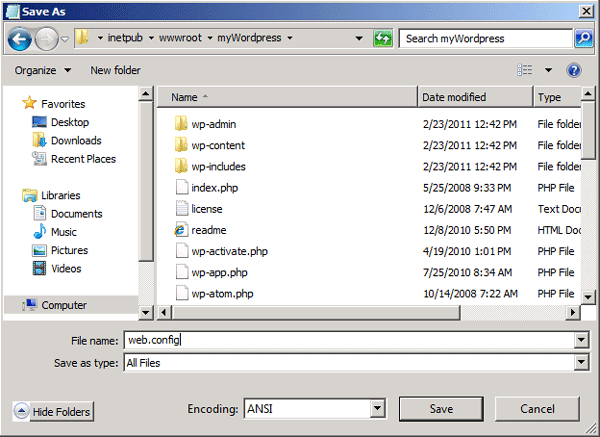


{kind=link}
{kind=link}
{kind=link}
{kind=link}
{kind=link}
{kind=link}
{kind=link}
{kind=link}
{kind=link}
{kind=link}
{kind=link}
{kind=link}
{kind=link}
{kind=link}
{kind=link}
{kind=link}
{kind=link}
The installation is now complete, and you are ready to use WordPress!
Additional Information
- WordPress is free, open-source content management system (CMS) software that lets individuals or communities of users easily publish, manage, and organize a wide variety of content on a website. For more information about WordPress, visit these websites:
- IIS URL Rewrite 2.0 lets you create powerful rules to implement URLs that are easier for users to remember and easier for search engines to find. For more information, visit these websites:
- Windows Cache Extension for PHP is a PHP accelerator that is used to increase the speed of PHP applications that are running on Windows and on Windows Server. After Windows Cache Extension for PHP is enabled and loaded by the PHP engine, PHP applications can take advantage of the functionality without any code modifications. For more information, visit this website:
- PHP Manager for IIS is a tool for managing one or many PHP installations on IIS 7.0 servers. For more information, visit these websites:
- For more general information about PHP, visit these websites:
- Other useful links: